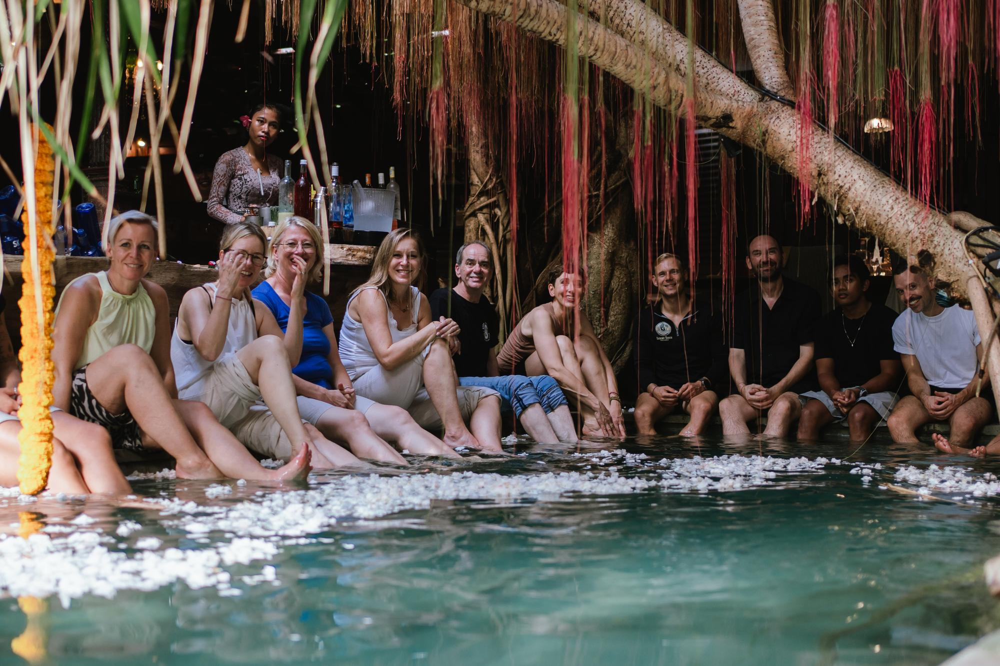

Alle vier Themen · Bali und Thailand
Das Original
Bewegung, Ernährung, Medizin und Mindset in einer Woche
- Nächster Termin
- 2. bis 9. Februar 2027 · Bali
- Dauer
- 7 Nächte, Dienstag bis Dienstag
- Gruppe
- höchstens 20 Gäste
Programm 1.390 €Zur Reise